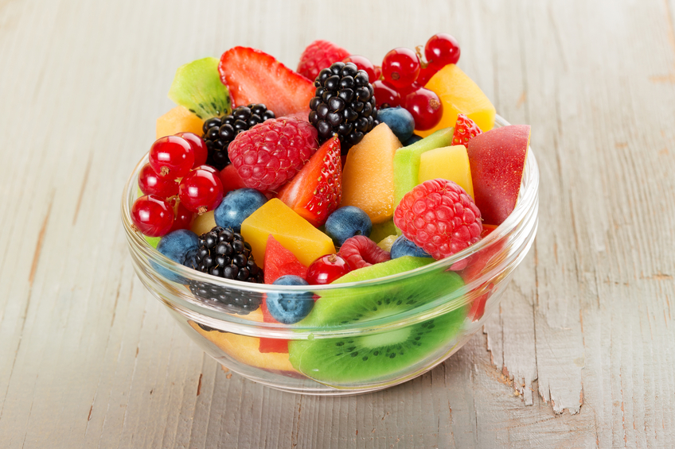
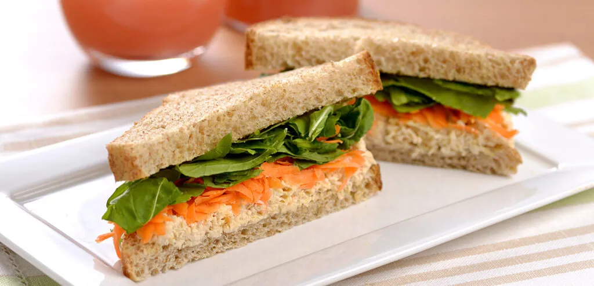

Trabalho de Programação
Nome:samile malman
N°:28
Série: 3°C
Alimentação saudavel
Nosso dia a dia sempre é repleto de refeições, das principais, como café da manhã, almoço e jantar, até lanches ao decorrer do dia para espantar a fome ou "forrar" o estômago e ter energia. No entanto, na hora de comer esses lanchinhos, é normal que surjam dúvidas sobre o que consumir, qual a quantidade ideal, como preparar a melhor opção, entre outras coisas. E se você tem uma alimentação balanceada e rica em componentes saudáveis, escolher opções de lanches saudáveis para tarde que se adequem à essa rotina e que te proporcionem tudo o que você precisa é ainda mais importante.
Conceitos Importantes:
Laços de repetição: ...
sanduiche natural
Romances exploram sentimentos...
Propriedades CSS:
Background-Color: ...
lanches saudaveis doces
Doces saudaveis...
Outros Conceitos:
Text-Transform: ...
Vídeo sobre ideias de lanches saudaveis
Abaixo está um vídeo interessante relacionado a receitas saudaveis: